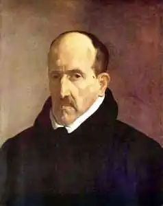

ҐОНҐОРА-І-АРҐОТЕ, Луїс де (Gongora у Argote, Luis de — 11.07.1561, Кордова — 23.05.1627, там само) — іспанський поет.Ґонґора-і-Арґоте народився у Кордові, де його батько займав почесну і вигідну посаду корехідора. П'ятнадцятирічним майбутній поет відправився у Саламанкський університет, де вивчав право та вдосконалювався у танцях і фехтуванні. Перед прийняттям у 1585 р. духовного сану він зазнав чимало любовних пригод, дрібних і значних життєвих конфліктів. Певний час Ґонґора-і-Арґоте перебував на посаді ключника собору в Кордові, що не заважало його веселому та безтурботному життю. Через два роки його звинуватили перед єпископом Пачеко в тому, що він абияк ставиться до церковних справ, відвідує бої биків, запрошує додому комедіантів і пише легковажні вірші. Ставши священиком, Ґонґора-і-Арґоте також не проявив особливої релігійності, очевидно, вважаючи свій сан лише засобом до існування.
Завдяки герцогові Лерма Ґонґора-і-Арґоте став почесним капеланом короля Філіппа III. Це була показна, але малоприбуткова посада. Живучи при дворі в Мадриді, Ґонґора-і-Арґоте не міг зробити кар'єру і постійно бідував. Щоби сплатити борги, йому доводилося навіть продавати речі.
Поетичні твори Ґонґора-і-Арґоте, відомі переважно в рукописах, породили заклятих ворогів і відданих прихильників. За два роки до смерті, вже хворий і безпам'ятний, поет повернувся у рідну Кордову.Ґонґора-і-Арґоте — центральна постать лірики бароко. Недаремно у першій поетичній збірці, яка вийшла друком у рік смерті поета, Ґонґора-і-Арґоте був названий "іспанським Гомером". За спиною в Ґонґора-і-Арґоте-поета величезна багатовікова культура. Вишукана поезія Стародавнього Риму та витончена схоластика середньовічної латинської літератури багато чого підказали Ґонґора-і-Арґоте-стилісту. Арабсько-андалузька лірика, що відтворювала світ мовби удвох планах — реальному й умовному, — надихнула його поезію. Ф. Петрарка та інші лірики епохи Відродження були наставниками Ґонґора-і-Арґоте у мистецтві сонета. Як і поезія Відродження, творчість Ґонґора-і-Арґоте розвивалась у двох планах. Він використовував два стилі — один зрозумілий і простий, другий — складний і заплутаний, розрахований на вузьке читацьке коло. Було би помилкою вважати, що у перший період Ґонґора-і-Арґоте використовував "зрозумілий" стиль, а в другий — "темний". Обидва стилі існували паралельно і навіть взаємодіяли, оскільки вони — елементи єдиної поетичної системи Ґонґора-і-Арґоте. Звертаючись до народнопоетичних жанрів, Ґонґора-і-Арґоте віддавав перевагу романсам і летрильям. Утворах "ясного" стилю поет спирається на певний, чіткий сюжет, простий і завершений мотив. Вибравши з народної поезії такий сюжет і мотив, він створює свій варіант, досить відмінний від народного. Традиційні жанри народної поезії Ґонґора-і-Арґоте прикрашає різноманітними і складними художніми тропами — метафорами, антитезами, гіперболами. Загалом це створювало особливий стиль, позначений свідомою поетичною майстерністю, народний мотив поєднувався та контрастував з вишуканими мистецькими прийомами. У Ґонґора-і-Арґоте є насмішкуваті та сатиричні летрильї, які тонко та граційно відтворюють почуття. Не меншим розмаїттям вирізняються і романси поета, в яких виразилося характерне для бароко протиставлення мистецтва природі, переконання в тому, що лише витончена майстерність може створити прекрасне. У художньо-тематичному аспекті ці романси досить строкаті: ліричні, прикордонні (присвячені боротьбі з маврами та перемозі над ними), мавританські. Крім серйозних, героїчних, він створив і бурлескно-сатиричні романси. Головне достоїнство сонетів Ґонґора-і-Арґоте — раціоналістична побудова, логічний розвиток думки. У нього є сонети, в яких він оспівує та прославляє, і є сонети сатиричні. У сонетах першої групи Ґонґора-і-Арґоте прославляє живих і створює епітафії померлим, змальовує чудові іспанські міста та річки, описує пам'ятки архітектури тощо. У сонеті "До троянди "поет розмірковує над ефемерністю краси: Родилась вчора ти — і завтра вмерти маєш.Хто ж дав тобі життя на цю коротку мить?Красою сяєш ти, щоб так недовго жить,Щоб одійти в ніщо — так свіжістю палаєш!Даремно ти себе надією втішаєш — Ти маєш одцвісти, як одцвітають всі,Приреченість лежить в самій твоїй красі,Бо передчасно ти зів'янеш і сконаєш.(Пер. Л. Первомайського)Сонети Ґонґора-і-Арґоте, присвячені коханню й уславленню жіночої краси, також зазвичай побудовані на контрасті. Це контраст між життям і смертю, красою та неминучістю її знищення. Стиль Ґонґора-і-Арґоте остаточно сформувався у поемах. Одна з них — "Історія Поліфема та Галатеї" ("Fabula de Polifemo у Galatea", 1612) — написана октавами. її сюжет запозичений із "Метаморфоз" Овідія, які привабили поета своїм фантастичним характером і химерністю образів. Відштовхуючись від класичного взірця, Ґонґора-і-Арґоте створив викінчену та досконалу поему бароко, при цьому швидше ліричну, ніж розповідну. Поема є поєднанням непримиренних контрастів і вражаючих за своєю виразністю гіпербол. Німфа Галатея — живе втілення краси та світла. У неї закоханий пастух Асіс, котрий ходить за нею, наче залізо за магнітом чи ідолопоклонник — за ідолом. Але в Галатею закохався і потворний циклоп Поліфем. Перед нами гострий контраст поміж доведеною до гротеску потворністю Поліфема та ніжним почуттям, що надихає його. У центрі поеми — побачення Асіса та Галатеї. Ми не чуємо їхньої розмови — це мовчазна пантоміма чи балет. Побачення, яке схоже на ідилію, пронизану духом гармонії, перериває з'ява розлюченого ревнощами чудовиська. Закохані втікають, але катастрофа наздоганяє їх. Циклоп вбиває Асіса, кинувши на нього скелю. Асіс перетворюється у струмок. Внутрішня динаміка поеми пов'язана із дисгармонією — ідилію руйнує страхітлива катастрофа. Поема сюжетно закінчена, і при всій внутрішній дисгармонійності вона зберігає рівновагу складових частин.Інакше принцип бароко виразився у "Поемах усамітнення" ("Soledades", 1614). Ґонґора-і-Арґоте написав першу поему "Усамітнення полів" і частину другої "Усамітнення берегів", плануючи створити ще дві: "Усамітнення лісів "і "Усамітнення пустель". Ці поеми значно різняться від "Історії Поліфема та Галатеї". У них відсутня фабула, немає заданої класичної традиції та строгої віршової форми. Ґонґора-і-Арґоте сам склав їхній сюжет і написав їх сільвою, довільною комбінацією 11— і 7-складових рядків, що давало поетові більшу внутрішню свободу. У "Поемах усамітнення " співчутливо змальовується життя на лоні природи. Перед читачем — моря, ріки та острови, ідилічне життя пастухів і рибалок у селах та пастуших хижах. Кохання на лоні природи, пісні, танці, полювання та риболовля — у всьому цьому проявляються щасливі та спокійні люди. їм протиставлений образ розчарованого мандрівця, який з волі випадку потрапив сюди. Ґонґора-і-Арґоте наділений талантом гостро сприймати природу як конкретно чуттєву реальність, але вона не лише вабить його, а й відштовхує. Природа у тому вигляді, в якому вона існує, на думку Ґонґора-і-Арґоте, негідна поезії, оскільки в ній багато потворного, незграбного, недосконалого. Змінити її можна за допомогою мови та стилю. Захищаючись від критиків, які нападали на його "Поеми усамітнення", Ґонґора-і-Арґоте зауважив в одному листі, що хотів надати іспанській мові вивищеного характеру латині. З цією метою поет насичував свій словник латинськими й італійськими словами, використовував архаїзми та неологізми, вживав іспанські слова у відмінному від загальноприйнятого значенні і т. д. Значну увагу Ґонґора-і-Арґоте зосередив на антитезах, а найголовніше, використовував блискучі метафори, виразні гіперболи та інші складні фігури. У "Поемах усамітнення" метафори настільки численні та оригінальні, що анулюють і затушовують природу, яку повинні характеризувати. Часто вони набувають самодостатнього характеру. Поема ніби розпадається на окремі образи та музикальні пасажі, хоча враження це оманливе. Перед нами оригінальний взірець ліричної поеми. Багатство її стилістичних прикрас, сяйливі метафори, елегантна і перевантажена образами мова — все це слугує розкриттю однієї ліричної теми — самотності героя на лоні чудової і схожої на декорацію природи. Третій значний твір Ґонґора-і-Арґоте — "Панегірик герцогу Лерма" (1600) — холодна, компліментарна поема, що уславлює подвиги вельможі, значно слабкіший від двох його попередніх поем.Щоби зрозуміти поезію Ґонґора-і-Арґоте, слід особливо детально розглянути його "темний" стиль, ті стилістичні прийоми та вишукані ходи, які він використовує, щоби перетворити реальний світ у світ стилізований і фантастичний. Поезія Ґонґора-і-Арґоте оперує живописом і музикою, вона звернена до зору та слуху. Дивовижна музичність віршів поета складає додаткове джерело їхнього художнього чару. Водночас Ґонґора-і-Арґоте не просто живописує. Він намагається виділити найефектніші властивості предмета. Натомість прикметника він використовує для характеристики одного предмета інший предмет. Явища природи та людей, які йому потрібно означити, він зіставляє з коштовними металами — золотом, сріблом, порівнює з кристалом і мармуром. При цьому в дусі естетики бароко слово виявляється багатозначним. "Кристал" може означати жіноче тіло, а також воду річки, моря, озера, джерела. Серія метафор пов'язана зі словом "золото". Воно стосується до всіх предметів золотавого кольору, як, наприклад, жіноче волосся, бджолиний мед, оливкова олія. Слово "сніг" означує предмети білого кольору. Що має на увазі автор, читач дізнається з контексту чи зі слова, яке сусідить із ним: "крилатий сніг" ("volante nieve") — білий сніг; "сніг, що втікає" ("figitiva nieve") — Галатея, яка біжить до моря; "зітканий сніг" ("hilada nieve") — біла скатертина. Складність і "темнота" мистецтва Ґонґора-і-Арґоте пояснюються не стільки глибиною висловлених у ньому ідей, скільки навмисним прагненням поета ускладнити саму манеру їхнього вираження. У листі з приводу свого стилю Ґонґора-і-Арґоте пояснював, що він прагне до "темного" та заплутаного: його мистецтво повинно бути доступним лише невеликій кількості освічених знавців-аристократів, він пише для обраних. Ґонґора-і-Арґоте представляв бароко в його аристократичному варіанті. Дійсності він протиставляв ілюзорний світ, схожий на феєрію й умовну декорацію. Створенню цього світу слугував і стиль поета, який започаткував цілий напрям в іспанській поезії, відомий під назвою "ґонгоризм". Українською мовою окремі твори Ґонґора-і-Арґоте переклали Л. Первомайський, М. Москаленко. За А. Штейном